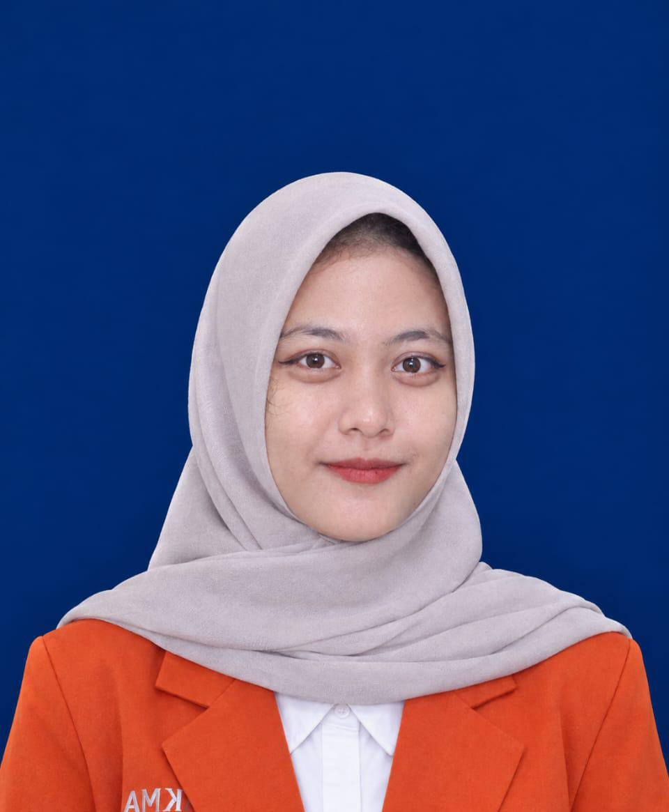

Mahasiswa Program Studi Sistem Informasi · Tech & Business Enthusiast
Halo! Saya Sinta, Sistem Informasi Enthusiast.
Saya Sinta Dwi Aryani, mahasiswa Universitas Komputama Cilacap Program Studi Sistem Informasi yang berfokus mempelajari bagaimana teknologi informasi dan pengelolaan data dapat dimanfaatkan untuk menyelesaikan permasalahan operasional, meningkatkan efisiensi pekerjaan, serta mendukung pengambilan keputusan yang tepat dalam dunia bisnis.
Berpikir Logis & Analitis · Analisis Alur Sistem · Tata Kelola Data

01. Analisis Kebutuhan Sistem
02. Pengelolaan & Analisis Data
03. Logika Pemrograman Aplikasi
04. Teknologi untuk Bisnis
01 · Profil Diri
Membangun Pola Pikir Analitis & Sistematis untuk Menghasilkan Solusi Digital
Saya Sinta Dwi Aryani merupakan mahasiswa Universitas Komputama Cilacap Program Studi Sistem Informasi yang memiliki ketertarikan pada perkembangan teknologi informasi, pengelolaan data, dan pengembangan sistem digital. Saya tertarik mempelajari bagaimana teknologi dapat dimanfaatkan untuk menyelesaikan permasalahan, meningkatkan efisiensi pekerjaan, serta mendukung pengambilan keputusan dalam dunia bisnis. Sebagai mahasiswa, saya terus berupaya mengembangkan kemampuan berpikir logis, analitis, dan sistematis melalui proses pembelajaran serta praktik secara bertahap.
“Bagi saya, teknologi bukan sekadar rangkaian kode atau infrastruktur, melainkan instrumen solutif untuk menyederhanakan alur kerja yang kompleks dan memberdayakan para pengambil keputusan.”
Berorientasi Nilai Bisnis
Pembelajar Adaptif
02 · Tentang Program Studi
Konvergensi Strategis: Teknologi Informasi, Bisnis, dan Manajemen
Sistem Informasi merupakan bidang ilmu yang menggabungkan teknologi informasi, bisnis, dan manajemen untuk menghasilkan solusi yang sesuai dengan kebutuhan pengguna. Dalam program studi ini, saya mempelajari dasar-dasar pemrograman, pengelolaan basis data, analisis dan perancangan sistem, serta pemanfaatan teknologi untuk mendukung proses bisnis. Melalui pembelajaran tersebut, saya ingin memahami tidak hanya bagaimana suatu sistem dibangun, tetapi juga bagaimana sistem tersebut dapat memberikan manfaat nyata, meningkatkan produktivitas, dan membantu menyelesaikan permasalahan secara efektif.
Teknologi Informasi
Pemrograman · Basis Data · Infrastruktur
Bisnis & Manajemen
Proses Bisnis · Nilai Tambah · Efisiensi
Kebutuhan Pengguna
Human-Centered Design · Peningkatan Produktivitas
03 · Minat & Bidang Pengembangan
Empat Pilar Keahlian yang Terus Dikembangkan
Pengembangan Sistem Informasi
Mempelajari proses analisis kebutuhan, perancangan, dan pengembangan sistem yang dapat membantu pengguna menjalankan aktivitas secara lebih terstruktur.
Analisis dan Pengelolaan Data
Mempelajari cara mengumpulkan, mengolah, menyimpan, dan menganalisis data agar dapat menghasilkan informasi yang berguna untuk pengambilan keputusan.
Pemrograman dan Pengembangan Aplikasi
Mempelajari logika pemrograman dan pengembangan aplikasi sebagai sarana untuk menciptakan solusi digital.
Teknologi untuk Bisnis
Mempelajari bagaimana teknologi dapat digunakan untuk meningkatkan efisiensi operasional, mengelola transaksi, dan mendukung perkembangan suatu usaha.
04 · Keterampilan
Matriks Keterampilan
Keterampilan Teknis
- Dasar-dasar pemrograman
- Pengolahan data menggunakan spreadsheet
- Dasar-dasar basis data
- Analisis dan perancangan sistem informasi
- Pemahaman proses bisnis
Keterampilan Nonteknis
- Berpikir kritis dan analitis
- Pemecahan masalah (Problem Solving)
- Komunikasi yang efektif
- Kerja sama dalam tim
- Manajemen waktu
- Kemampuan belajar secara mandiri
05 · Visi & Tujuan Karier
“Menjadi individu yang kompeten di bidang Sistem Informasi, mampu beradaptasi dengan perkembangan teknologi, serta dapat memberikan kontribusi melalui pemanfaatan teknologi yang tepat guna.”
Komitmen Pencapaian
- Meningkatkan kemampuan teknis berkelanjutan
- Memperluas wawasan perkembangan teknologi informasi
- Membangun pengalaman melalui proyek dan kegiatan relevan
Target Peran Masa Depan
System Analyst · Data Analyst · Information Systems Developer
06 · Komitmen Pengembangan Diri
Saya percaya bahwa perkembangan teknologi menuntut setiap individu untuk terus belajar dan beradaptasi. Oleh karena itu, saya berkomitmen untuk meningkatkan kompetensi melalui pembelajaran berkelanjutan, praktik langsung, serta evaluasi terhadap setiap proses yang saya jalani. Bagi saya, portofolio ini bukan hanya dokumentasi perjalanan akademik, tetapi juga representasi dari proses belajar, perkembangan kemampuan, dan tujuan yang ingin saya capai di masa depan.
Studi Kasus Proyek
Perancangan Sistem Informasi Inventaris & Stok Barang
Model Analisis Data Penjualan Menggunakan Spreadsheet
Perancangan Skema Basis Data Relasional Manajemen Akademik
Hubungi Saya
Mari Terhubung dan Berkolaborasi
Tertarik berdiskusi atau ingin mengenal saya lebih jauh? Kirim pesan lewat formulir, atau hubungi langsung melalui email.
sintaryn27@gmail.com